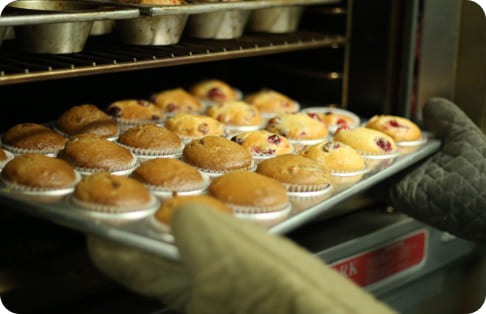
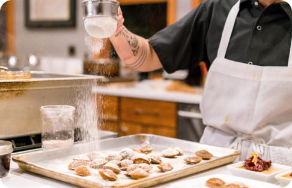

NEWS
-

2023.11.23
クリスマス用の新メニューのご紹介
今年のクリスマスは、copanが贈る特別なメニューで一層華やかに過ごしませんか？
クリスマス限定で登場する「米粉シュトーレン」は、フルーツとナッツがぎっしり詰まった贅沢な一品。ほのかなシナモンの香りが季節の訪れを感じさせます。また、クリスマスツリーをイメージした「米粉クリスマスツリーパン」は、抹茶とホワイトチョコの甘さが絶妙なハーモニーを奏でます。クリスマスディナーにぴったりな「米粉ガーリックブレッド」もご用意しています。どれも国産米粉を使用し、健康志向ながらも満足感たっぷりの味わいです。
今年のクリスマスは、特別なパンと共に素敵なひとときをお過ごしください。 -

2023.11.01
秋の新メニューが続々と焼き上がりました
秋の訪れとともに、copanでは新メニューが続々と焼き上がりました。
この季節限定の「米粉パンプキンブレッド」は、ほくほくとしたカボチャの甘みが楽しめる一品です。また、「米粉マロンパン」は、栗の風味豊かなクリームがたっぷり詰まっており、秋の味覚を存分に味わえます。さらに、「米粉アップルシナモンロール」は、シナモンの香りとリンゴの酸味が絶妙にマッチした逸品です。どのパンも米粉ならではのもちもちとした食感が特徴で、健康志向の方にも安心してお召し上がりいただけます。
秋の味覚を楽しみながら、季節の移ろいを感じるひとときを、ぜひ当店の新メニューでお楽しみください。 -

2023.10.20
当店おすすめのメニューのご紹介
copanでは、素材にこだわったパンを取り揃えております。
中でもおすすめは「米粉食パン」です。もっちりとした食感と自然な甘みが特徴で、トーストすると外はカリッと中はふんわりとした仕上がりになります。また、「米粉クロワッサン」は、バターの香りとサクサクの食感が楽しめる一品です。朝食や軽食にぴったりで、何度でも食べたくなる味わいです。さらに、季節ごとに変わる限定パンも見逃せません。春には桜の香りが楽しめる「米粉桜あんぱん」、夏には爽やかな「米粉レモンパン」、秋には「米粉パンプキンブレッド」、冬には「米粉シュトーレン」と、一年を通して季節の味覚を楽しめます。どのパンも国産米粉を使用し、健康と美味しさを追求した自慢の逸品です。 -

2023.09.30
新作のクロワッサンが登場しました！
新作のクロワッサンが登場しました！
今回の新作は、特別に厳選されたバターと国産米粉を使用し、さらにリッチな味わいと食感を追求しました。サクサクとした外側と、しっとりとした内側が絶妙なバランスで、バターの芳醇な香りが口いっぱいに広がります。朝食にぴったりなプレーンタイプのほか、チョコレートやアーモンドを使ったバリエーションもご用意しております。また、季節限定のフレーバーも登場予定で、その時々の旬の味をお楽しみいただけます。手間暇かけて作り上げた新作クロワッサンを、ぜひ一度ご賞味ください。皆様のお越しを心よりお待ちしております。 -

2023.08.05
【夏休み限定】親子でパン作り教室を開催中
夏休み限定で、copanでは親子で楽しめるパン作り教室を開催中です。
この教室では、プロのパン職人が丁寧に指導し、国産米粉を使ったヘルシーなパン作りを体験していただけます。親子で一緒にパンをこねたり、形を整えたりすることで、楽しい思い出を作りながら、パン作りの基本を学べます。参加者には、焼き上がったパンをその場でお召し上がりいただけるほか、お土産としてお持ち帰りいただけます。
ご予約はお早めにどうぞ。皆様のご参加を心よりお待ちしております。 -

2023.07.10
【夏休み限定】親子でパン作り教室を開催します！
今年の夏休み、copanでは親子で楽しめるパン作り教室を開催します！
この教室では、プロのパン職人が親切丁寧に指導し、国産米粉を使用したパン作りの基礎を学べます。親子で一緒に生地をこねたり、形を作ったりする過程を通じて、楽しい思い出を作りながら、お子様の創造力と協調性も育むことができます。出来上がったパンはその場で試食でき、お土産として持ち帰ることも可能です。
週末開催、一回完結型のため気軽にご参加いただけます。家族で特別な時間を過ごしながら、美味しいパンを作る体験をしてみませんか？
ご予約はお早めにどうぞ。皆様のご参加を心よりお待ちしております。 -

2023.06.01
夏の新メニューのご紹介
夏の訪れと共に爽やかな新メニューが登場しました。
今年の夏限定でご提供する「米粉レモンパン」は、国産レモンの爽やかな酸味が特徴の一品です。ふんわりとした生地にレモンピールが練り込まれ、暑い夏にもさっぱりとお召し上がりいただけます。また、「米粉ココナッツブレッド」は、ココナッツの甘い香りが広がるトロピカルな味わいで、夏の気分を盛り上げます。さらに、夏の果物を使った「米粉マンゴーパン」も登場し、ジューシーなマンゴーの甘さがたまりません。どのパンも、国産米粉ならではのもっちりとした食感を楽しめると共に、夏のフレッシュな味わいを堪能できます。
ぜひこの機会に、新しい夏の味覚をお試しください。皆様のご来店を心よりお待ちしております。